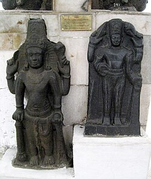
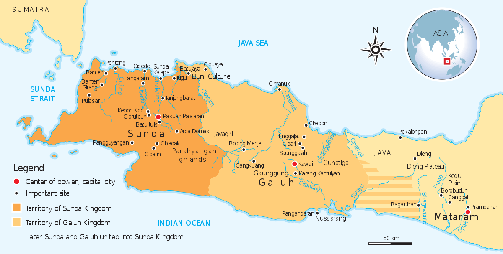
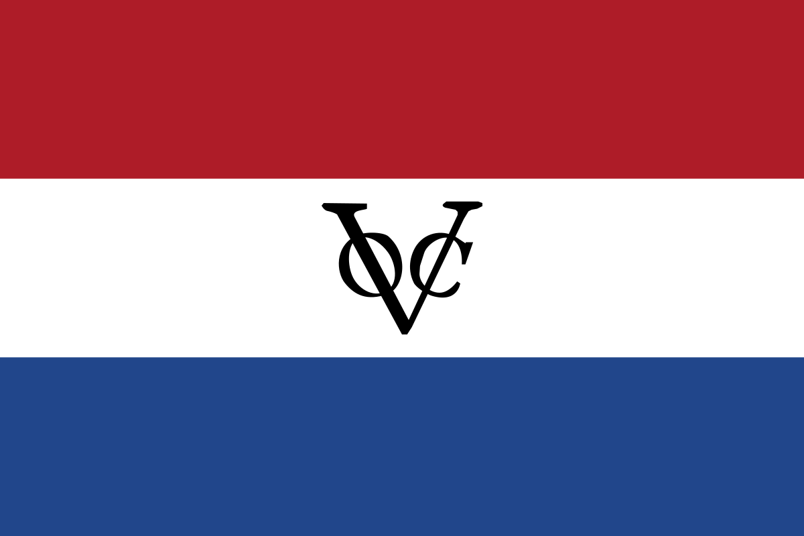

Jakarta has been home to multiple settlements. Below is the list of names used during its existence:
The Buni people is a prehistoric clay pottery culture that flourished in coastal northern West Java, Jakarta, and Banten around 400 BC to 100 AD and survived until 500 AD.
Sundapura is the name mentioned in the Tugu inscription from Tarumanagara, a kingdom in coastal West Java. The strategic geographical position of coastal West Java, which corresponds to today modern Jakarta, is a commanding region that controls the Sunda Strait. This location is strategic in regard to Sumatra and also its connection to Asian continent of India and China.
After the fall of the Tarumanagara, the name of city was changed to 'Sunda Kelapa' or 'Coconut of Sunda,' growing to be the main harbour for the Sunda Kingdom due to its desirable location.
The name 'Jakarta' is derived from the word Jayakarta (Devanagari: जयकर्त), which is ultimately derived from the Sanskrit जय jaya (victorious), and कृत krta (accomplished, acquired), thus Jayakarta translates as 'victorious deed', 'complete act', or 'complete victory'. It was named for the Muslim troops of Fatahillah which successfully defeated and drove the Portuguese away from the city in 1527, eventually renaming it 'Jayakarta.' Tomé Pires, a Portuguese apothecary, wrote the name of the city in his magnum opus as Jacatra or Jacarta during his journey to the East Indies.
After the Dutch East India Company took over the area in 1619, they renamed it 'Batavia', after the Batavi, a Germanic tribe who were seen as the ancestors of the Dutch. The city was then also known as Koningin van het Oosten (Queen of the Orient), a name that was given for the urban beauty of downtown Batavia's canals, mansions and ordered city layout.[22] After expanding to the south in the 19th century, this nickname came to be more associated with the suburbs (e.g. Menteng and the area around Merdeka Square), with their wide lanes, green spaces and villas.
During the Japanese occupation, the city was renamed as Jakaruta Tokubetsu-shi (ジャカルタ特別市; Jakarta Special City). After the Japanese surrender, the name was changed to 'Jakarta'.